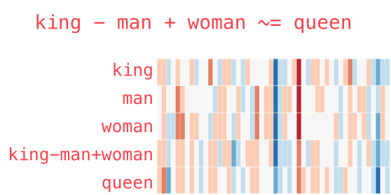
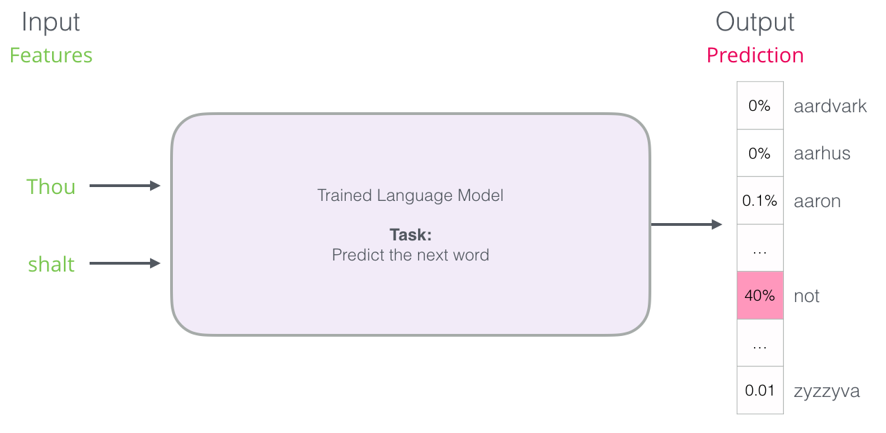
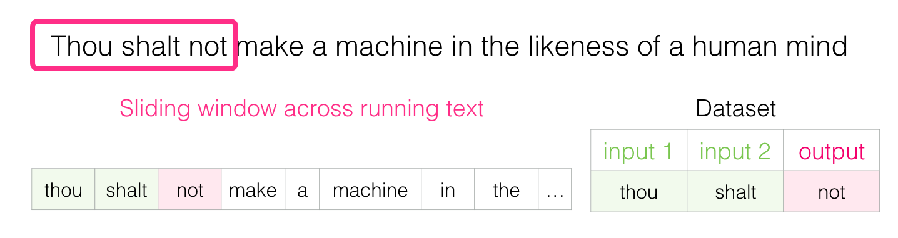
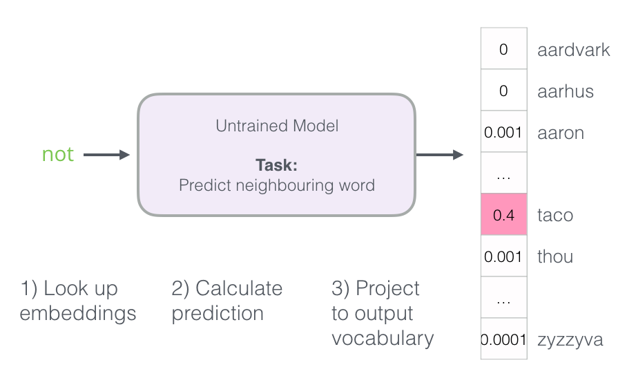
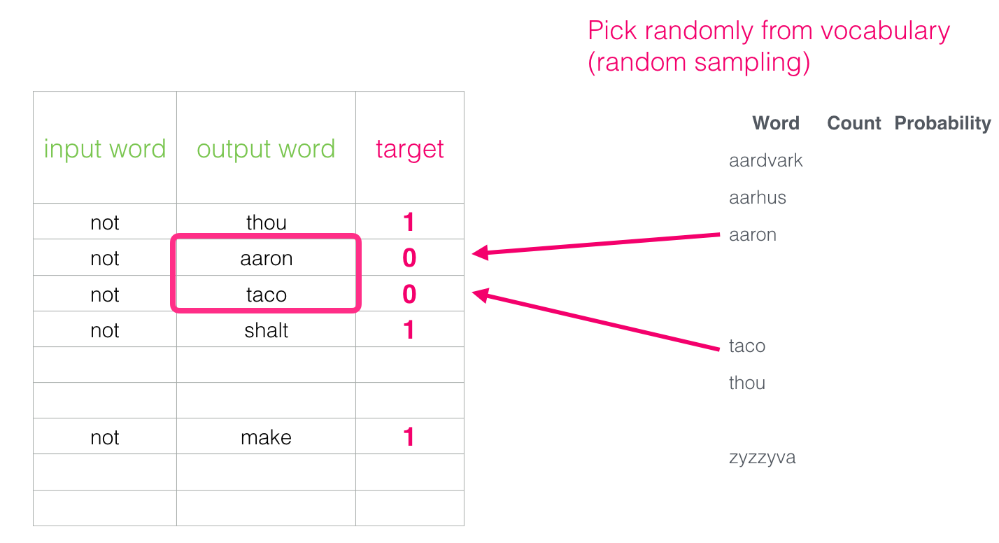
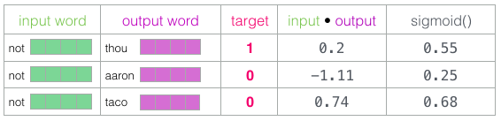
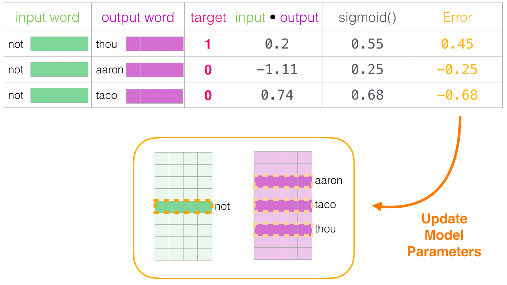

Natural Language Processing: word embeddings
Lviv University
Context
Distributional hypothesis
The link between similarity in how words are distributed and similarity in what they mean is called the distributional hypothesis.
Joos (1950), Harris (1954), and Firth (1957): amount of meaning difference between two words is corresponding roughly to the amount of difference in their environments.
Philosophy
Wittgenstein (1953)
“the meaning of a word is its use in the language”
Lewis Carroll
When I use a word,’ Humpty Dumpty said in rather a scornful tone, ‘it means just what I choose it to mean — neither more nor less.’
Lexical semantics
Lexical semantics
Word Similarity
| C1 | C2 | POS | USF* | USF rank (of 999) | SimLex | SimLex rank (of 999) |
|---|---|---|---|---|---|---|
| dirty | narrow | A | 0.00 | 999 | 0.30 | 996 |
| student | pupil | N | 6.80 | 12 | 9.40 | 12 |
| win | dominate | V | 0.41 | 364 | 5.68 | 361 |
| smart | dumb | A | 2.10 | 92 | 0.60 | 947 |
| attention | awareness | N | 0.10 | 895 | 8.73 | 58 |
| leave | enter | V | 2.16 | 89 | 1.38 | 841 |
Lexical semantics
Word relatedness
Lexical semantics
Semantic field
A semantic field is a set of words which:
- cover a particular semantic domain
- bear structured relations with each other.
Lexical semantics
Affective meaning
Early work on affective meaning (Osgood et al., 1957) found that words varied along three important dimensions of affective meaning:
- valence: the pleasantness of the stimulus
- arousal: the intensity of emotion provoked by the stimulus
- dominance: the degree of control exerted by the stimulus
| Valence | Arousal | Dominance |
|---|---|---|
| courageous | 8.05 | 5.5 |
| music | 7.67 | 5.57 |
| heartbreak | 2.45 | 5.65 |
| cub | 6.71 | 3.95 |
Vector semantics
Vector semantics
\[ \text{Vector semantics} = \text{Affective meaning} + \text{Distributional hypothesis} \] Vector semantics learns representations of the meaning of words, called embeddings, directly from their distributions in texts.
Embeddings
Taxonomy
- static vs dynamic embeddings
- sparse vs dense
Vector semantics
Concepts or word senses
- Have a complex many-to-many association with words (homonymy, multiple senses)
- Have relations with each other
- Synonymy
- Antonymy
- Similarity
- Relatedness
- Connotation
Vector semantics
Zellig Harris (1954): If A and B have almost identical environments we say that they are synonyms.
Edit distance
One-hot distance
Bag-of-Words
TF-IDF
Feature space

Coordinates
Gender and age are called semantic features: they represent part of the meaning of each word. If we associate a numerical scale with each feature, then we can assign coordinates to each word:
Feature space updated

Feature space updated
Feature space 3D
New words: “king”, “queen”, “prince”, and “princess”. 
Feature space 3D
Feature vectors
Definition
Vectors representing values of semantic features are called feature vectors.
Applications
How can we compute word similarity?
- count number of features where words differ
- cilculate Euclidean distance between points
Analogies
For example, “man is to king as woman is to ?”.
Analogies
Graphical representation:
TF-IDF
Usually used for term-document matrices.
Denote a term by \(t\), a document by \(d\), and the corpus by \(D\). \[ count(t,d) \equiv n \text{ of times that } t \text{ appears in } d \]
Term frequency
\[ TF(t,d) \equiv \begin{cases} 1 + log(count(t,d)), \; \text{if } count(t,d) > 0,\\ 0, \; otherwise \end{cases} \]
Document frequency
\[ DF(t,D) \equiv n \text{ of documents that contain } t \]
TF-IDF
Inverse document frequency
Defined to counter-balance the impact of often-encountered terms. IDF is a numerical measure of how much information a term provides: \[ IDF(t,D)=log\dfrac{|D|+1}{DF(t,D)+1}, \] where \(|D|\) is the total number of documents in the corpus.
TF-IDF measure
Simply the product of TF and IDF: \[ TFIDF(t,d,D)=TF(t,d)⋅IDF(t,D). \]
PPMI
Denote \(w\) as target word, \(c\) as context word.
\[ PMI(w,c) = log_2 \dfrac{P(w,c)}{P(w)P(c)} \]
\(P(w,c)\) = how often we observe the words together
\(P(w)P(c)\) = how often we expect the two words to co-occur assuming they each occurred independently.
Interpretation
PMI gives us an estimate of how much more the two words co-occur than we expect by chance.
PPMI
Positive PMI
Negative PMI are problematic (small probabilities require enormous corpora), so it’s more common to use Positive PMI: \[ PPMI(w,c) = max\left(log_2 \dfrac{P(w,c)}{P(w)P(c)}, 0\right) \]
PPMI
Cooccurrence matrix
Let’s assume we have a cooccurrence matrix F with W words as rows and C contexts as columns.
We define \(f_{ij}\) as number of times that word \(w_i\) occurs together with context \(c_j\).
PPMI matrix
\[\begin{align*} &p_{ij} = \dfrac{f_{ij}}{\sum\limits_{i=1}^W \sum\limits_{j=1}^C f_{ij}}, p_{i*} = \dfrac{\sum\limits_{j=1}^C f_{ij}}{\sum\limits_{i=1}^W \sum\limits_{j=1}^C f_{ij}}, p_{*j} = \dfrac{\sum\limits_{i=1}^W f_{ij}}{\sum\limits_{i=1}^W \sum\limits_{j=1}^C f_{ij}},\\ &PPMI_{ij} = max\left(log_2 \dfrac{p_{ij}}{p_{i*}p_{*j}}, 0\right) \end{align*}\]
Embeddings
Question
How do we design features for all words in a dictionary?
Answer
Feed massive amounts of text to an algorithm that will create its own feature space.
Definition
Word representations in this new synthetic space are called word embeddings.
Embeddings

Embeddings
Supported analogies
- pluralization
- past tense
- comparisons
- country->capital mappings
Uses
Input to NNs (transformers) that try to understand the meanings of entire sentences, or even paragraphs.
Examples: BERT, GPTx.
Embeddings
Example
Word embedding for “king”:
[ 0.50451 , 0.68607 , -0.59517 , -0.022801, 0.60046 , -0.13498 , -0.08813 , 0.47377 , -0.61798 , -0.31012 , -0.076666, 1.493 , -0.034189, -0.98173 , 0.68229 , 0.81722 , -0.51874 , -0.31503 , -0.55809 , 0.66421 , 0.1961 , -0.13495 , -0.11476 , -0.30344 , 0.41177 , -2.223 , -1.0756 , -1.0783 , -0.34354 , 0.33505 , 1.9927 , -0.04234 , -0.64319 , 0.71125 , 0.49159 , 0.16754 , 0.34344 , -0.25663 , -0.8523 , 0.1661 , 0.40102 , 1.1685 , -1.0137 , -0.21585 , -0.15155 , 0.78321 , -0.91241 , -1.6106 , -0.64426 , -0.51042 ]
Embeddings

Analogies
Euclidean distance

Dot product

Dot product
Problem
All vectors originate at the origin.
Solution
Make them originate from the average center of all the points (zero-mean).

Dot product
Problem
Make dot product exactly equal to the cosine.
Solution
Normalize the vectors (\(u=[x,y] \rightarrow \left[\dfrac{x}{\|x\|}, \dfrac{y}{\|y\|}\right]\)).

Dot product
Dot product
Why dot product?
- less computations
- can be used in a neural network
Construction
How do we construct a language model? We can use N-grams.
Definition: recall
An n-gram is a sequence of n words: a 2-gram (which we’ll call bigram) is a two-word sequence of words like “please turn”, “turn your”, or ”your homework”, and a 3-gram (a trigram) is a three-word sequence of words like “please turn your”, or “turn your homework”.
Another Definition
A probabilistic model that can estimate the probability of a word given the n-1 previous words, and thereby also to assign probabilities to entire sequences.
Construction
# Import libraries
from sklearn.feature_extraction.text import CountVectorizer
# Create sample documents
documents = ["This is the first document.",
"This document is the second document.",
"And this is the third one."]
# Create the Bag-of-Words model with unigrams, bigrams, and trigrams
vectorizer = CountVectorizer(ngram_range=(1, 3))
X = vectorizer.fit_transform(documents)
# Print the feature names and the document-term matrix
print("Feature Names:", vectorizer.get_feature_names_out())Construction
Construction
Construction

Construction
Construction

Construction
Skipgram model
Guess neighboring words using the current word. 
Construction
The intuition of skip-gram
- Treat the target word and a neighboring context word as positive examples.
- Randomly sample other words in the lexicon to get negative samples.
- Use logistic regression to train a classifier to distinguish those two cases.
- Use the learned weights as the embeddings.
Construction

Construction

Training
Training
How to improve performance of the step 3?

Training

Training
Logistic regression: need to add negative samples. 
Training
Training
At the start of training, initialize Embedding and Context with random values:

Training
Perform lookup: 
Training
Compute sigmoid:
Training
Calculate error:

Training
Update parameters: 